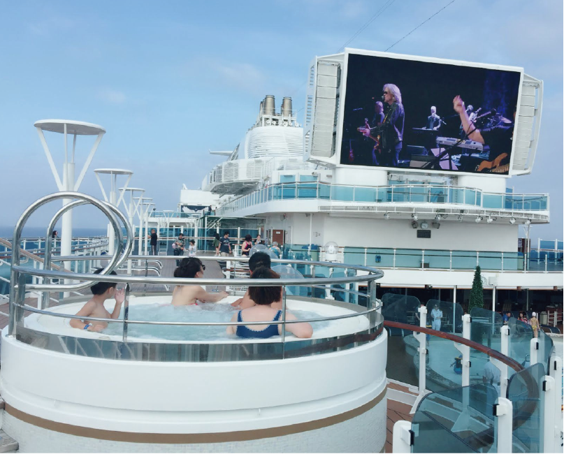
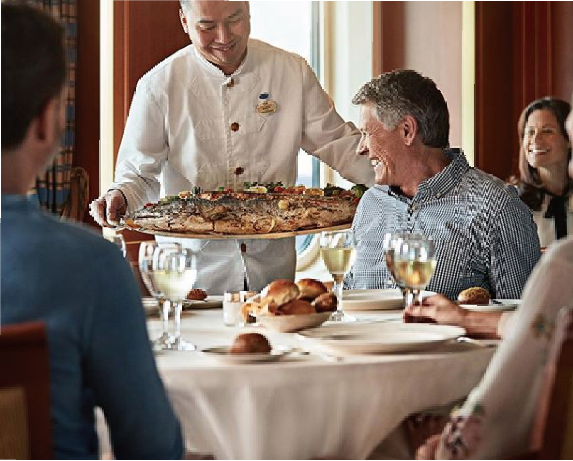

盛世公主號
Majestic Princess
亞洲唯一雙米其林星級主廚設計晚宴菜單餐廳，全球海上最大免稅精品空間及最大露天星空電影院，海上十大驚奇特色設施「海上天空步道」。盛世公主號將以美麗全新客艙、拉斯維加斯風格娛樂，以及世界各地的道地美食和其它旗艦級的設施，來迎接她的貴賓。
四大必玩體驗
-
海上天空步道
獨創「海上天空步道」最夯打卡點，海上十大驚奇特色之一，凌空 39 公尺、全透明圓弧設計，宛若懸空飄浮，藍色大海就在腳底！
-
公主劇院
斥資重金打造原創歌舞秀，從高科技設備，隨時變換場景的 LED 燈光幕與無人機特效，與各式栩栩如生的道具設置，到每位表演者精湛演出，每晚場場爆滿，座無虛席。
-

星空露天電影院
首創設施，在頂層甲板上享受巨型螢屏與環繞音效；白天在池畔迎迎海風、曬曬太陽，晚上仰望點點星空，感受寧靜時光！
-

老饕最愛海上美食
駐有兩間米其林星廚設計菜單之特色餐廳；現做薄脆披薩最美味；異國美食長廊任君選擇；24 小時不怕吃的國際點心吧與客艙送餐服務！
盛世公主艙房
旗艦遊輪擁有逾 80% 客艙可享有私人陽台，無敵海景盡收眼簾。每間客艙配備有獨家打造的奢享床墊：由－講求科學與美容覺兼具的“睡眠博士＂邁克爾•布魯斯 (Michael Breus) ，其中奢華棉麻織物床組則專為『公主優質睡眠計劃』設計，只為打造極致舒適的海上優質睡眠 。
相關常見問題
A. 如您已挑選好您所喜愛的遊輪出發日期及船隻名稱，您可以洽詢我們的旅行社夥伴訂購您的船票。如您欲參加團體包裝行程，也有提供完整團體包裝行程，如阿拉斯加、歐洲、日本及新加坡行程。
A. 搭乘遊輪旅行，並不是一直待在船上，航程中會停靠許多港口，可以選擇下船參觀。有別於一般旅行，遊輪利用您晚上的睡眠時間移動，白天停靠港口讓您下船參觀。即使是全日的海上巡航，您也可以利用船上的各項休閒設施和參加各項活動，就像是在渡假村渡假一樣。所以，搭乘遊輪旅行，沒有巴士旅行的趕路及勞累，又比定點旅遊的行程豐富。
A. 完全不正確。傳統上因為搭乘遊輪天數長，旅客的確是需要有比較長的假期，才有辦法參加，所以船上的旅客有許多是退休的銀髮族。但是近年來，船上的年輕人越來越多了，而且船上的許多設施及活動，如健身房、有氧舞蹈、交際舞教學、賓果遊戲、手工藝教學...等，都不是只為了年 長者設計的。晚間各個酒吧的舞會型態，快慢皆有非常適合年輕人。
Q. 如果航程中停靠了好幾個國家，我需要辦理每個國家的簽證嗎 ?
A. 一般而言，起航港口所在國及終點港口所在國家的簽證是一定需要的，但公主遊輪無法協助旅客 處理簽證問題，簽證文件自行上外交部領事局或各國簽辦中心及旅行社相關單位確認。
Q. 如果因故沒能及時搭上船怎麼辦？如果臨時有事，提前下船可以退費嗎 ?
A. 如果無法於啟航前辦妥登船手續，請立即與公主遊輪聯絡，安排您前往下一個可辦理登船手續的港口登船，但您需自行負擔因此產生的費用（如住宿、交通、機票、簽證、餐食...等）。如您選擇放棄登船，是無法獲得任何退費的。由於遊輪上的船位，無法分段銷售，如果您中途下船，剩下的行程，是無法獲得退費的。
A. 遊輪上的船位，並不分段銷售，即使只選擇參加部份的行程，其收費是和參加全程是一樣的。
A. 船上每間艙房都設定最少二人一間，如果產生單人房的狀況，還是要付兩個人的費用。
A. 船上分標準套房艙（陽台、客廳、浴缸）、迷你套房艙（陽台、小客廳、浴缸【部分船隻的船艙無陽台或浴缸】)、豪華陽台艙（陽台、淋浴式浴室，帝王、皇家、盛世公主號有小客廳）、陽台艙（陽台、淋浴式浴室）、外艙（窗戶、淋浴式浴室）、遮蔽外艙（窗戶但被部份或全部遮蔽、淋浴式浴室）、內艙（無窗戶、淋浴式浴室）。除了艙房內的大小不同外，船上所有的服務都是一樣的，不會因艙等的不同而有差別待遇。僅會提供部分額外服務給標準套房及迷你套房賓客，詳情請洽公主遊輪。
A. 公主遊輪擁有最舒適的艙房空間，部分艙房最多可容納至四人。 由於海上安全人數的配置規定，三、四人房數量有限，各個艙等第三、四人床型配置亦有所不同。請依照您所喜好的艙等類型。
A. 由於歐美人士往往在半年前、甚至一年前就決定了他們的旅行計畫，而台灣國內的旅客卻往往在二、三個月前才決定，所以當我們收到您的訂位要求，開始為您做作業時，一些熱門航線上的艙房，就已經所剩不多了，這樣的狀況下，我們只能將您與您的朋友，儘可能訂在同一樓層，但是當無法滿足您的要求時，還是希望您能諒解。
A. 很抱歉，遊輪並無嬰幼兒特殊費用，基於相關法令規定，即使２歲以下幼兒不佔床，仍均仍依一人計算。但以遊輪費用來看，艙房第三、第四人將有優惠價格。
A. 公主遊輪旨在讓您的生日，婚禮，蜜月，結婚紀念日和誓言重溫儀式更加刻骨銘心。從您踏上公主遊輪的那一刻起，就已經被我們的熱情與關懷所包圍，我們努力讓您在船上的每一天都是慶典。在屬於您的特殊節日裡，我們豐富的慶典經驗將會幫助您創造最深刻的記憶，讓您永久回味。
請在上船前至少90天前告知我們您的需要，我們會指定「特派」工作人員為您精心設計慶典儀式。您可以從我們的慶典功能表中選擇鮮花，葡萄酒或香檳等服務專案來點綴慶祝儀式。如果需要提前購買禮物或策劃慶典，請瀏覽我們的 產品目錄並填寫您的訂購單。
請在上船前至少90天前告知我們您的需要，我們會指定「特派」工作人員為您精心設計慶典儀式。您可以從我們的慶典功能表中選擇鮮花，葡萄酒或香檳等服務專案來點綴慶祝儀式。如果需要提前購買禮物或策劃慶典，請瀏覽我們的 產品目錄並填寫您的訂購單。
A. 當然可以。每一艘公主遊輪都有網路提供 24 小時網路服務。此外，您可以在自已的艙房或公共區域連接到無線網路。事先從網路服務供應商（ISP）訂購網頁版郵件服務的貴賓，建議在上船前先核對您的網頁郵件查看功能。大部份 ISP 都有指定的網站，讓您可以通過信箱位址和密碼直接在瀏覽器上查看郵件。關於網路收費及其它資訊，請聯繫網路咖啡室經理。或請洽 公主遊輪英文官網查詢。
A. # 行李損壞 - 若您發現行李損壞，須於下船前向乘客服務櫃檯人員提出申報（或在碼頭向工作人員提出），以協助我們的工作人員為您確認及建檔。行李一旦領走後，本公司將視行李已完好交付，不予受理事後申訴。申報行李損壞後，請向服務人員需求副本並發送到客服信箱info@carnival-tw.com 備查。公主遊輪不承諾將任何生財工具、家庭用品、易碎物或文件、票據或其他貴重物品視為行李托運。對正常磨損產生的行李外包裝損壞（如刮傷、污點、弄髒、壓痕）或不防水行李的水漬損壞或把手、車輪、拉鏈或鎖等外部結構的損壞不承擔責任。您保證不將前開物品置於任何行李中交給公主遊輪，倘違反本保證規定而將前開物品交給公主遊輪，您將免除公主遊輪就該物品損失或損毀之一切責任。前開物品應以其他方式運往您的目的地。強烈建議乘客隨時保管貴重物品、不可替換物品及藥品，不要將該物品打包到行李或手提箱由他人處理。您置於行李內攜帶之現金、證券、票據、商業文件或任何貴重物品或寶石、藝術品、電子產品、CD、望遠鏡、娛樂設備、硬體、眼鏡(含眼鏡、太陽眼鏡、隱形眼鏡等)、助聽器、藥物、醫療設備、酒精飲料、香菸(草)等產品，倘經查詢非經公主遊輪全權控制之原因下遭到遺失、失竊、損毀或丟棄，則運送人不負其責。
＊請注意，所有尋獲遺失物品之食品類將僅代為保存1個月；其餘物品則暫為保存６個月，如逾期未領取將視同放棄，進而銷毀丟棄。
# 遺失物 – 若您發現行李、個人物品遺失，應於下船前向乘客服務櫃檯人員提出申報（或在碼頭向工作人員提出），以協助我們於第一時間內為您尋回物品。若您未於下船前或是離開碼頭前提出申告，您需備妥申請表格及相關證明文件自航程抵達日算起 1 個月內提出申報；另外以書面提出說明，發送到客服信箱 info@carnival-tw.com 備查或洽客服專線 0800-350-999。當物品尋獲時，我們將通知您前來領取。公主遊輪將盡力尋回您的遺失物品，對未尋獲之個人保管物品，恕我們難負保管及理賠的責任。提醒您，您置於行李內攜帶之現金、有價證券、流通票據、銀器、珠寶等貴重物品、藝術品、電子相關產品、望遠鏡、娛樂設備、硬體、任何類型的眼鏡、醫療設備及藥物、酒精飲料、香菸(草)等產品或商業文件和身份證件或樣品等物，倘經查詢非經公主遊輪全權控制之原因下遭到遺失、失竊、損毀或丟棄，無論乘客是否事先告知，公主遊輪恕不負其責。您同意倘若行李或財產（包含公主遊輪保留或您交付公主遊輪的所有遺失物品）未在您離船後 90 日內書面具領者，將視同放棄，且為公主遊輪所有，您亦放棄對其提出任何請求權。您也同意請領任何物品，支付公主遊輪交付該物品所衍生之費用，且公主遊輪不就交付該物品或交付法律禁止之物品承擔任何責任。
※遺失物找尋單從此下載
# 遺失物 – 若您發現行李、個人物品遺失，應於下船前向乘客服務櫃檯人員提出申報（或在碼頭向工作人員提出），以協助我們於第一時間內為您尋回物品。若您未於下船前或是離開碼頭前提出申告，您需備妥申請表格及相關證明文件自航程抵達日算起 1 個月內提出申報；另外以書面提出說明，發送到客服信箱 info@carnival-tw.com 備查或洽客服專線 0800-350-999。當物品尋獲時，我們將通知您前來領取。公主遊輪將盡力尋回您的遺失物品，對未尋獲之個人保管物品，恕我們難負保管及理賠的責任。提醒您，您置於行李內攜帶之現金、有價證券、流通票據、銀器、珠寶等貴重物品、藝術品、電子相關產品、望遠鏡、娛樂設備、硬體、任何類型的眼鏡、醫療設備及藥物、酒精飲料、香菸(草)等產品或商業文件和身份證件或樣品等物，倘經查詢非經公主遊輪全權控制之原因下遭到遺失、失竊、損毀或丟棄，無論乘客是否事先告知，公主遊輪恕不負其責。您同意倘若行李或財產（包含公主遊輪保留或您交付公主遊輪的所有遺失物品）未在您離船後 90 日內書面具領者，將視同放棄，且為公主遊輪所有，您亦放棄對其提出任何請求權。您也同意請領任何物品，支付公主遊輪交付該物品所衍生之費用，且公主遊輪不就交付該物品或交付法律禁止之物品承擔任何責任。
※遺失物找尋單從此下載
A. 公主遊輪的航線，都將當地的海面狀況考慮在內，且大部份的行程，都是貼靠近海岸線航行，除非遇上了較差的天候，海面上有較大的風浪，否則大部份的航程，都是相當平穩的，甚至感覺不到遊輪在移動。另外；由於公主遊輪大部份現役的船隻噸位都在七萬噸以上，且船上配備先進的平衡裝置，除非遇上惡劣天候，否則是不必擔心暈船的問題。
A. 救生演習是一項強制性的項目，依海上安全（SOLAS）規定辦理，於開航前半小時舉行全船救生演習，每位乘客均應全程參與。目的在於一旦發生不可預測的緊急事件時，所有乘客與船員均能迅速在集合地點匯集。演習過程中，傳授求生安全信息。
A. 公主遊輪上皆備有醫務室及駐船船醫，可以提供一般的醫療及緊急狀況的處理，如果真的有非常緊急的狀況，會聯絡岸上的醫療救援單位派遣醫療直昇機至遊輪上進行運送作業。但所產生的醫療費用，需由旅客自行負擔。
A. 遊輪航行在海上時，如果有事需聯絡您，可以透過衛星電話與您聯絡。
A. 如果您是要自己前往登船，基本的英語溝通能力是一定需要的。否則還是建議您參加由旅行社為您包裝好的團體套裝行程，由專業的領隊為您服務。目前部份團體我們安排了專業的船陪隨團登船，這些船陪針對船上從登船開始，他們就是您在船上的翻譯人員，他們每天會將船上的活動表譯成中文，送到您房間，由於對船上活動的瞭解，他們也會建議您參加適合您的各項活動，您的各種需求，都可透過船陪來為您溝通。
A. 公主遊輪盡一切努力配合身障旅客，如有需使用輪椅或其他特殊狀況的乘客，請於出發前盡早通知我們。公主船隊中每艘遊輪皆設有無障礙艙房，但因數量有限，必須及早訂位。航程間的陸上行程，請乘客須自備輪椅。
但請注意：若需要轉乘接駁船上岸時，乘客需能自行步行登上接駁船，不可以以輪椅直接搭乘。如果無法自行登船者，因安全考量，將無法登岸觀光。
但請注意：若需要轉乘接駁船上岸時，乘客需能自行步行登上接駁船，不可以以輪椅直接搭乘。如果無法自行登船者，因安全考量，將無法登岸觀光。
A. 公主船隊所有艙房及陽台均為禁菸區域。船上僅戶外甲板及雪茄吧、舞廳、及賭場的指定區域可供吸菸。實際區域依船上公告為準。
A. 公主遊輪歡迎滿六個月或一歲以上(視航線區域規定)孩童搭乘。公主遊輪規定懷孕滿24週期之孕婦不得搭乘，此週期將以航程結束當日作計算。 孕婦應於航行前 7 至 10 日內由其主治醫生開立適航證明 (MEDIF)，且需於表單上詳載孕婦妊娠週數等診斷說明，以供備查。為便利目的地國之入境查驗及順利航行，我們建議您隨身攜帶主治醫師所開立註明預產期之診斷證明。部份國家對孕婦入境有特別規定，您尙須於出發前先洽詢入境國之當地辦事處相關事宜。
A. 公主遊輪最棒的服務之一，就是在船上不需攜帶現金，所有消費只需您的簽名，便會自動掛到艙房帳單上。結束航程前，您將收到一份列有明細的帳單供您核對。如在登船時已提供信用卡卡號，在核對金額無誤後，行程結束就可直接下船，不須至櫃檯辦理退房。倘若選擇現金或旅行支票的乘客，在辦理登船手續時，需在登船後至船上事務櫃台存放 USD$300 的押金，以供船上消費折抵用，當押金金額過低，事務櫃檯將會通知您再存入現金。（行程結束當天收到結帳明細，請務必保留至少三個月。）
請注意：所有金流需於船上事務櫃台作業，於完成後務必向服務人員索取憑證，並且自行再次確認船上帳戶金額是否有誤。
A. 若無以信用卡綁定押金者，旅客不論年齡皆需於登船當日至船上賓客服務櫃檯完成每人現金 300 美元的押金手續。
旅客若欲以信用卡綁訂押金者，航程中將產生預授權約 100 美元消費金額(扣款金額以實際消費為主)。建議於出發前先行知會信用卡公司，告知可能會有海外消費產生，以免發生信用卡無法授權之狀況，導致航程中還須前往服務櫃檯重新作業，若造成您的困擾，敬請見諒。
旅客若欲以信用卡綁訂押金者，航程中將產生預授權約 100 美元消費金額(扣款金額以實際消費為主)。建議於出發前先行知會信用卡公司，告知可能會有海外消費產生，以免發生信用卡無法授權之狀況，導致航程中還須前往服務櫃檯重新作業，若造成您的困擾，敬請見諒。
A. 所繳交的船費，已包括船上的餐點、晚間的歌舞表演、住宿、各停靠港的港口稅，船上大部份的公共設施都是免費的。
需要另外付費則指：酒精類的飲料、碳酸飲料、特調咖啡、冰淇淋、特定的餐廳需付訂位費、個人消費（如購物、洗衣、上網、電話等）、船上小費將會直接記在您的客艙帳單上，每人（含孩童）小費目前每晚金額為陽台艙、外艙、內艙一個晚上是美金 13.50 元、迷你套房艙與Club等級艙房ㄧ個晚上是美金 14.50 元，標準套房艙ㄧ個晚上是美金 15.50 元（實際小費以船上公佈為準）。岸上觀光費用及團體旅客需付領隊小費（給付標準請參考旅行社之旅遊須知）。
需要另外付費則指：酒精類的飲料、碳酸飲料、特調咖啡、冰淇淋、特定的餐廳需付訂位費、個人消費（如購物、洗衣、上網、電話等）、船上小費將會直接記在您的客艙帳單上，每人（含孩童）小費目前每晚金額為陽台艙、外艙、內艙一個晚上是美金 13.50 元、迷你套房艙與Club等級艙房ㄧ個晚上是美金 14.50 元，標準套房艙ㄧ個晚上是美金 15.50 元（實際小費以船上公佈為準）。岸上觀光費用及團體旅客需付領隊小費（給付標準請參考旅行社之旅遊須知）。
A. 可直接前往乘客服務台詢問；利用乘客服務台外的查詢，掃描船卡，或是利用 Princess@Sea 應用程式查詢。
A. 公主遊輪分有四種會員制度，完成一次旅程的貴賓即為『黃金會員』；展開第 4 次航程或完成 30 天航程即為『紅寶石會員』；展開第 6 次航程或完成 50 天航程即為『白金會員』；展開第 16 次航程或完成 130 天航程即為『菁英會員』。實際優惠方案請詳閱 公主會員權益。
A. 請務必保留您的船上帳單三個月，以便帳款問題查詢。若您發現船上帳款有問題，請於下船後兩週內立即向公主遊輪反映，並提供船上帳單及信用卡扣款證明。發送到客服信箱 info@carnival-tw.com 或洽客服專線 0800-350-999。
A. 選擇信用卡付款，遊輪公司在辦理登船手續時，會先過卡以確保您的信用卡得以使用，可能產生佔用額度的現象，但此筆過卡金額並不會實際扣款。若您發現這筆款項出現在您的信用卡帳單上，您可以提供帳單，並發信至客服信箱 info@carnival-tw.com，我們將協助您處理後續的款項問題。
A. 如因天候問題導致行程變更等相關因素，公主遊輪提供的補償金會放至每位賓客之客艙帳戶；您可以選擇使用於品嚐特色餐廳的餐食、飲品購買、紀念品消費、支付小費，或其他船上消費抵扣。
如您欲將未使用完畢的補償金領回，需於離船前親臨至船上乘客服務櫃檯直接進行現金退款的領取（作業時間需視現場狀況而訂），或於離船後，自行向公主遊輪臺灣通知（info@carnival-tw.com），並由公主遊輪臺灣分公司協助您向美國總公司申請退匯，財政退款作業時間（約莫三個月），並且必需提供待退款人之本人銀行臺幣帳戶資料，待帳戶審視後，方可退款。
如您欲將未使用完畢的補償金領回，需於離船前親臨至船上乘客服務櫃檯直接進行現金退款的領取（作業時間需視現場狀況而訂），或於離船後，自行向公主遊輪臺灣通知（info@carnival-tw.com），並由公主遊輪臺灣分公司協助您向美國總公司申請退匯，財政退款作業時間（約莫三個月），並且必需提供待退款人之本人銀行臺幣帳戶資料，待帳戶審視後，方可退款。
A. 千萬不要再誤會了！版畫是用「版」來當媒介物所製作的繪畫，它不是直接描畫或速寫的直接藝術，它同時也是「複數」的藝術。一般來講，版畫可分四種形式：木版畫（凸版畫）、銅版畫（凹版版畫）、石版畫（平版畫）、絲網版畫（孔版畫）等四種。版畫為「間接藝術」，而非直接描畫，是利用媒介物(即原版)將形象印製於紙張、玻璃、金屬、化學膠等版面上所得。先是美術家自己預先在心中醞釀其意象，再嘗試、整修，直至此版能印出自己所需要、喜愛的形象於畫面上為止。版畫往往是原作的價值延伸。版畫原作品，因其有藝術家授權，除要有作者簽名外，還得附加試作或限定版張次之記號；另外也有製作年限和尺寸大小的規定等，也被歸入藝術投資收藏品的範疇。版畫既有「複數性」，那麼美術家或印刷師是否可無限制的去印製呢？
A. 船上帳戶的餘額退款作業(Folio Refund)：包括了客艙帳戶餘額、可退款式船上消費金、船上補償金，此類退款如賓客無法以信用卡退款，將以臺幣支票方式來進行餘額退款(註)，請參照下方作業方式：
(1).請於航程結束後，將船上發送的最終消費明細總表(表中顯示待退餘額)，以電子郵件的方式寄至公主遊輪臺灣客戶服務部 info@carnival-tw.com 或 傳真至 02-21833010 請求查詢及確認，並請附載個人資料（護照英文姓名、e-mail、電話、艙房號碼），以便與您連繫。
(2).確認待退餘額完成後，客服部將會回覆訊息予該賓客，並提供退款申請表供賓客填寫。
(3).公主遊輪臺灣分公司客戶服務部待收到賓客所回覆之「退款申請表」後，將會在60日內進行核對並確認資料無誤，即開立支票並直接郵寄給賓客，同時隨信將附上回郵信封及退款收執聯；
(4).賓客收到此退款支票後，即可直接至銀行存入同名帳戶；
(5).收到退款支票之賓客，請務必協助於退款收執聯上簽名，並利用回郵信封寄回給公主遊輪臺灣分公司，以確認賓客確實收到了退款。
註：退款支票之“指定受款人”限為總公司指定之搭乘者本人的姓名，同時亦會加註“禁止背書轉讓”。未成年的賓客請另行來電洽詢：02-2183-3000。
(1).請於航程結束後，將船上發送的最終消費明細總表(表中顯示待退餘額)，以電子郵件的方式寄至公主遊輪臺灣客戶服務部 info@carnival-tw.com 或 傳真至 02-21833010 請求查詢及確認，並請附載個人資料（護照英文姓名、e-mail、電話、艙房號碼），以便與您連繫。
(2).確認待退餘額完成後，客服部將會回覆訊息予該賓客，並提供退款申請表供賓客填寫。
(3).公主遊輪臺灣分公司客戶服務部待收到賓客所回覆之「退款申請表」後，將會在60日內進行核對並確認資料無誤，即開立支票並直接郵寄給賓客，同時隨信將附上回郵信封及退款收執聯；
(4).賓客收到此退款支票後，即可直接至銀行存入同名帳戶；
(5).收到退款支票之賓客，請務必協助於退款收執聯上簽名，並利用回郵信封寄回給公主遊輪臺灣分公司，以確認賓客確實收到了退款。
A. 在船上規劃下一趟旅程，再簡單不過了。公主遊輪未來航程顧問提供您有關目的地、行程、船隻、和特別優惠的建議。每人訂金只要100美元，同時享受未來船上消費金每房高達300美元，不容錯過！
如果還未確定未來的旅行計劃，您也同樣可以購買未來航程預訂金，即可在兩年內預訂您的下一趟旅程，兩年內沒有使用可全數退回。屆時根據預訂旅程的天數與客艙，您同樣可以獲得免費未來船上消費金，詳情請與客服專員確認！
＊未來航程預訂僅適用船上乘客，離船後即無法購買。
＊訂金和船上消費金以兩人住房為準，以每人每次每份訂金計算，不限份數。如購買此訂金單當日起兩年內沒有預約任何新航次，則可向客服專員申請全額退款。
＊船上消費金只適用於航程訂金單的持有人，不適用於上鋪乘客。
＊船上消費金無法兌換現金，僅適用該航次，航次終了即告失效。
＊訂金折扣與船上消費金不適用臺灣包船航次、環太平洋、環球遊輪、或環球遊輪分段航次之預約。船票折扣與訂金折扣優惠依預訂日期而定。
如果還未確定未來的旅行計劃，您也同樣可以購買未來航程預訂金，即可在兩年內預訂您的下一趟旅程，兩年內沒有使用可全數退回。屆時根據預訂旅程的天數與客艙，您同樣可以獲得免費未來船上消費金，詳情請與客服專員確認！
＊未來航程預訂僅適用船上乘客，離船後即無法購買。
＊訂金和船上消費金以兩人住房為準，以每人每次每份訂金計算，不限份數。如購買此訂金單當日起兩年內沒有預約任何新航次，則可向客服專員申請全額退款。
＊船上消費金只適用於航程訂金單的持有人，不適用於上鋪乘客。
＊船上消費金無法兌換現金，僅適用該航次，航次終了即告失效。
＊訂金折扣與船上消費金不適用臺灣包船航次、環太平洋、環球遊輪、或環球遊輪分段航次之預約。船票折扣與訂金折扣優惠依預訂日期而定。
A. 公主遊輪並不建議使用帳戶可用餘額扣款之信用卡（如VISA金融卡/簽帳卡），因航行時的押金預授權/佔用額度將會直接從帳戶進行扣款。若您使用此類型卡片而產生與實際消費金額不符的狀況，需請您提出證明，於航程後進行申訴辦理退款流程，時間約為6週以上。
反之，若您的卡片交易模式為信用額度（一般信用卡），押金預授權僅會佔用您的額度，並不會實際與您請款。於航行中您尚有可能會收到銀行所發送之預授權金額扣款簡訊或通知信函（約為台幣3000元），但該筆押金（授權額度）會自動解除，並不會出現在您的收款帳單中。解除時間還需參照各家銀行規定。
反之，若您的卡片交易模式為信用額度（一般信用卡），押金預授權僅會佔用您的額度，並不會實際與您請款。於航行中您尚有可能會收到銀行所發送之預授權金額扣款簡訊或通知信函（約為台幣3000元），但該筆押金（授權額度）會自動解除，並不會出現在您的收款帳單中。解除時間還需參照各家銀行規定。
A. 有的！除了自助餐廳裡有各式各樣的蔬菜水果外，主餐廳亦提供烹調的一般素食料理。如有特殊規範, 可以事先提出需求協助。
A. 有的！對於年長者，船上有健康菜單供您選用，甚至備有低糖甜點，供您餐後選用。嬰幼兒則同樣備有嬰兒食品。
A. 有的！只要事先預訂，船上亦可提供猶太教餐食。
A. 部分可以的喔！酒類的規範是，每一位達法定飲酒年齡的旅客允許在每個航次攜帶一瓶不超過 750ml 的葡萄酒或香檳，在艙房內飲用不需收取開瓶費。倘若攜帶超過一瓶以上，無論在哪裡飲用，皆須收取 USD$15 的開瓶費。至於烈酒或啤酒是禁止攜帶上船。所有的行李都會經過掃瞄，不符合規定的酒精性飲料產品將被移除並丟棄。非酒精飲料則可放置隨身行李攜帶，但須通過安檢。在登船口或各停靠港購買的酒類，則無法在航程中享用，船上警衛將會在登船口的安檢處登記，並為您保管，直至航行結束前一晚才會送至您的艙房。
A. 電子船票(登船證)、護照、支付雜項費用的信用卡(或現金)、適當的旅遊證件。
A. 由於每條航線航行地區的氣候不同，建議您在出發前先行查詢各停靠港口的氣候，用來做攜帶衣物的參考。在港口時，晚上可穿著便裝，通常穿輕鬆的長褲、毛衣、罩衫、開領衫即可。
在遊輪餐廳中則不准穿短褲、毛邊T恤、「破洞的」牛仔褲及赤足。
正式之夜，女士請穿較為正式的裙子/洋裝或褲裝，而男士則著西裝。
需穿著泳裝才可使用船上的泳池和按摩水療池。
部份健身房內的健身器材，需穿著運動鞋，方可使用。
如果需要浴袍，可要求您的船艙服務人員送至您的房內。
在遊輪餐廳中則不准穿短褲、毛邊T恤、「破洞的」牛仔褲及赤足。
正式之夜，女士請穿較為正式的裙子/洋裝或褲裝，而男士則著西裝。
需穿著泳裝才可使用船上的泳池和按摩水療池。
部份健身房內的健身器材，需穿著運動鞋，方可使用。
如果需要浴袍，可要求您的船艙服務人員送至您的房內。
A. 只要付少許費用，就能使用船上的送洗服務。所有衣物均可於 48 小時內歸還。船上也提供投幣式自助洗衣設備，在自助洗衣室裏面有代幣面板，需要先用房卡購買代幣之後，投到洗衣機或是烘乾機方能使用。洗衣及乾衣分別是美金 3 元，洗衣粉是美金 1.5 元（相關費用均以船上公布為準）。
A. 公主遊輪所有船隻的插座及電壓均跟台灣相同 110V/60Hz，插頭為 2孔或 3孔，不需要另外攜帶轉換插座。
A. 每間艙房均提供新鮮水果（應您要求而提供）、晚間開床服務、枕畔巧克力、高級洗髮潤髮精、沐浴乳及身體乳液。房間內則因應全球環保議題，牙刷、牙膏、拖鞋及刮鬍刀等個人衛生用品，請您務必自行攜帶。
每間艙房之標準配備包含：保險箱、冰箱、吹風機，以及 110-volt / 60-cycle 的交流電(AC) 制式美規插座。如果您對電源插座有任何疑問，請在使用前先詢問您的艙房服務生。
每間艙房之標準配備包含：保險箱、冰箱、吹風機，以及 110-volt / 60-cycle 的交流電(AC) 制式美規插座。如果您對電源插座有任何疑問，請在使用前先詢問您的艙房服務生。
A. 選擇信用卡付款，遊輪公司在辦理登船手續時，會先過卡以確保您的信用卡得以使用，可能產生佔用額度的現象，但此筆過卡金額並不會實際扣款。若您發現這筆款項出現在您的信用卡帳單上，您可以提供帳單，並發信至客服信箱 info@carnival-tw.com，我們將協助您處理後續的款項問題。
A. 沒有的唷！因此比起航空，更加方便了呢！
A. 還在擔心基隆港周遭停車場客滿或收費過高嗎？不用擔心，公主遊輪為您想到了！公主遊輪特約停車請見下方資訊：
1.【正好停停車場】航程結束，取車前請先至出口管理室出示主遊輪船卡，採人工收費給予停車優惠（特約價目表）！停車場位置（地圖）：基隆南站停車場：基隆市仁愛區孝四路10號。基隆北站停車場：基隆市仁愛區港西街16號對面。正好停停車場24小時客服專線：(02)27995657。
2.【基隆六合停車場】航程結束，取車出示公主遊輪船卡證明即可享有停車優惠提供每日最高收費150元之優惠（以日計算）！六合停車場入口（地圖）：基隆市信義區東明路177號對面六合停車場連絡電話：(02)2466-2053六合停車場聯絡手機：0965-381-371
1.【正好停停車場】航程結束，取車前請先至出口管理室出示主遊輪船卡，採人工收費給予停車優惠（特約價目表）！停車場位置（地圖）：基隆南站停車場：基隆市仁愛區孝四路10號。基隆北站停車場：基隆市仁愛區港西街16號對面。正好停停車場24小時客服專線：(02)27995657。
{kind=link}
2.【基隆六合停車場】航程結束，取車出示公主遊輪船卡證明即可享有停車優惠提供每日最高收費150元之優惠（以日計算）！六合停車場入口（地圖）：基隆市信義區東明路177號對面六合停車場連絡電話：(02)2466-2053六合停車場聯絡手機：0965-381-371
{kind=link}